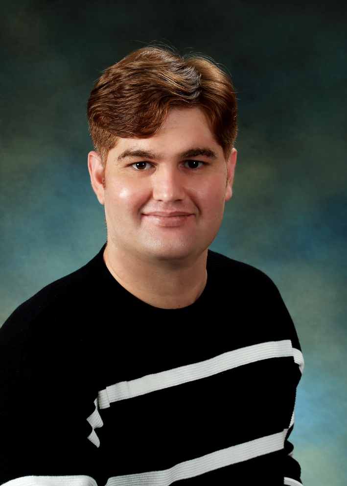

Computer Vision
- Object Detection
- Image Classification
- Semantic Segmentation
- Feature Extraction
- Image Enhancement
- Motion Analysis
- 3D Imaging
- Camera & Video Analytics
- Vision-Language Models
Machine Learning Engineer & Ph.D. Researcher (Defense Pending)
Bridging deep computer vision, industrial edge AI (General Motors), and multi-modal medical imaging.

01 — About
Ph.D. candidate at the University of Michigan-Flint specializing in computer vision, spatio-temporal deep learning, and multi-modal medical imaging. My work spans from deploying real-time anomaly detection pipelines on edge hardware (Jetson, TensorRT, ROS 2) at General Motors to pioneering clinical brain aneurysm detection algorithms in collaboration with neurosurgeons at Henry Ford Health System.
Focus
Spatio-temporal deep learning & 3D segmentation
Deployment
Real-time edge AI on Jetson & TensorRT
Clinical
Neurosurgeon-validated aneurysm imaging
02 — Skills
03 — Experience
General Motors R&D · Warren, MI · Jan 2026 – Present
SMILES Lab, University of Michigan-Flint · Flint, MI · Jan 2022 – Dec 2025
Oakland University, Computer Science Department · Rochester, MI · Sep 2023 – Apr 2025
Mixed Reality & Interaction Lab, Sejong University · Seoul, South Korea · Sep 2018 – May 2021
Digital Image Processing Lab, Islamia College University · Peshawar, Pakistan · Jun 2016 – Jul 2018
04 — Education
University of Michigan-Flint · Flint, MI
Focus: Brain aneurysm detection, segmentation, and rupture prediction using multimodal imaging and clinical data.
Sejong University · Seoul, South Korea
Thesis: Deep learning-based field-of-view selection in 360-degree video.
Islamia College University · Peshawar, Pakistan
Thesis: Raspberry Pi-based CNN-assisted self-driving car.
05 — Research
Peer-reviewed research across computer vision, edge AI, and medical image analysis, published in IEEE, Elsevier, and Springer venues, alongside granted and pending patents in the United States and South Korea.
Full publication list on Google ScholarIrfan, M. et al. Computerized Medical Imaging and Graphics.
Irfan, M. et al. Information Fusion.
Irfan, M. et al. Computerized Medical Imaging and Graphics.
Irfan, M. et al. IEEE Internet of Things Journal.
Irfan, M. et al. IEEE Transactions on Image Processing.
Sajjad, M., Irfan, M. et al. IEEE Transactions on Intelligent Transportation Systems.
U.S. provisional patent application filed in 2026.
Retained as a protected trade secret in 2026.
U.S. Provisional Application No. 30275/70862P.
KR Patent 10-2284913 B1.
KR Patent 10-2168438 B1.
Active peer reviewer for top-tier IEEE, Elsevier, and Springer journals in computer vision, artificial intelligence, and medical imaging — evaluating methodological rigor, reproducibility, and clinical validity.
Conferences attended and presented at, spanning computer vision, machine learning, and clinical imaging communities.
06 — Projects
Spatio-temporal analysis of live FLIR thermal streams to flag manufacturing defects in real time, deployed on Jetson edge hardware and integrated into a ROS 2 processing and broadcasting pipeline.
Fusion of DSA, MRA, and CT modalities for 3D aneurysm segmentation and rupture-risk prediction, built on a clinical dataset curated and validated with neurosurgeons at Henry Ford Health.
Federated Learning and one-shot learning architectures that train diagnostic models across institutions without centralizing patient data — addressing both clinical data scarcity and privacy constraints.
Panoramic image stitching with 3D quality assessment, paired with deep learning dehazing and defogging models optimized to run on resource-constrained edge devices.
07 — Contact
Open to research collaborations, industry partnerships, and conversations about edge AI, computer vision, and clinical machine learning. Based in Grand Blanc, MI — U.S. Permanent Resident, no sponsorship required.